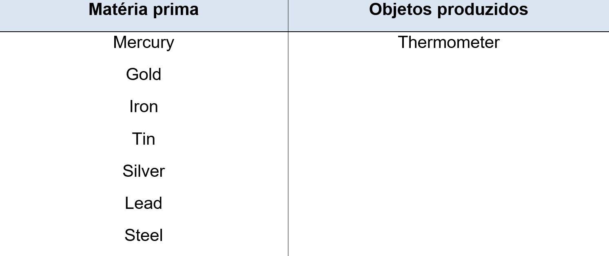

Capítulo 3: Metallurgy – Metalúrgica
Metalurgista (ou metalúrgico) é responsável pelos projetos de tratamento e de produção de metais e ligas metálicas. Além disso, os projetos no âmbito da Engenharia Metalúrgica possibilitam a criação de novos compostos, feitos a partir da combinação de metais com outros materiais, como vidro, plástico e cerâmica. Vamos conhecer a matéria prima de um metalúrgico em inglês, os metais.

Reconstruindo conhecimentos
Na metalurgia todo o trabalho é manual. E no inglês há dois verbos com o significado fazer/produzir, que são: make e do. Mas o uso deles são diferenciados.
Diferença entre DO e MAKE
O verbo MAKE e Do têm o mesmo significado mas são empregados de diversas maneiras. Pode ser confuso para nós falantes da língua portuguesa já que nós usamos apenas o verbo fazer.
O verbo DO é usado quando nenhum objeto físico é produzido. Quando usar o DO?
• DO é usado quando falamos sobre trabalho, afazeres, tarefas.
Have you done your homework? (Você já fez sua tarefa?)
I need to do the ironing today. (Eu preciso passar roupa hoje)
I would love to do that job. (Eu iria adorar fazer aquele trabalho)
• O do é usado também para referir-se a atividades gerais, ou seja, quando descrevemos uma ação sem sermos específicos. Neste caso, geralmente usamos palavras como: thing, something, nothing, anything, everything.
I am not doing anything today. (Eu não vou fazer nada hoje)
She does everything for her father. (Ela faz tudo para seu pai)
Quando usar o MAKE?
• O verbo make é usado quando algo é produzido, construído ou criado. Pode ser usado também para indicar o tipo de material com que algo foi feito.
I will make a cup of tea. (Eu vou fazer um copo de chá)
The house was made of wood. (A casa foi feita de madeira)
Eating chocolate makes me happy. (Comer chocolate me faz feliz)
Can I make a comment? (Posso fazer um comentário)
Presente contínuo - atividades que estão em andamento
What the man are doing? O que o homen está fazendo?
He is making steel. Ele está fazendo aço.
Observe que os verbos MAKE e DO nas situações acima estão com a TERMINAÇÃO ING. Isso porque, é uso do presente contínuo. Usamos verbos com ING para descrecer ações em andamento. Esse tempo verbal, usamos no verbo to be da nossa unidade anterior e um verbo com ING. Observe nosso quadro explicativo.
Assista ao vídeo veja as transformações do aço
O que aprendi
• Nessa unidade aprendemos o vocabulário de metalurgia;
• Aprendemos as diferenças de uso dos verbos make e do;
• Aprendemos a fazer frases de ações em andamento com o uso do presente contínuo;
• Vimos as transformações do steel (aço).
Praticando
Observe nosso dicionário ilustrado e complete a tabela com a principal matéria prima.
